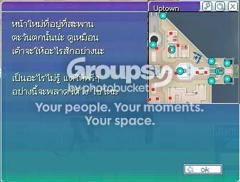
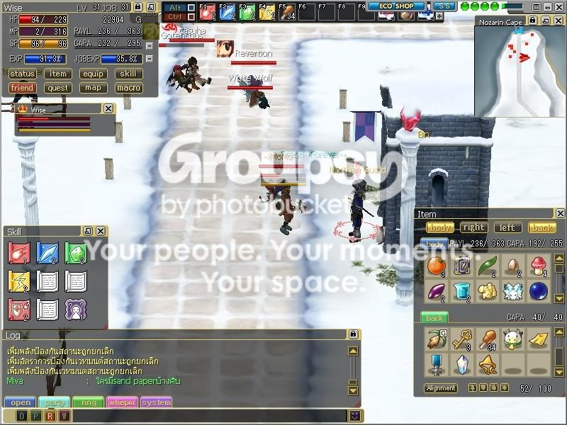
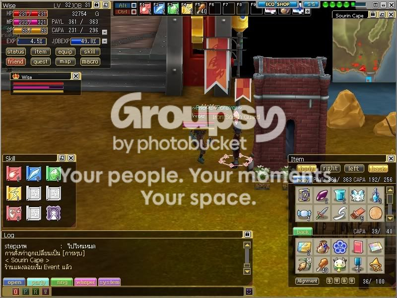
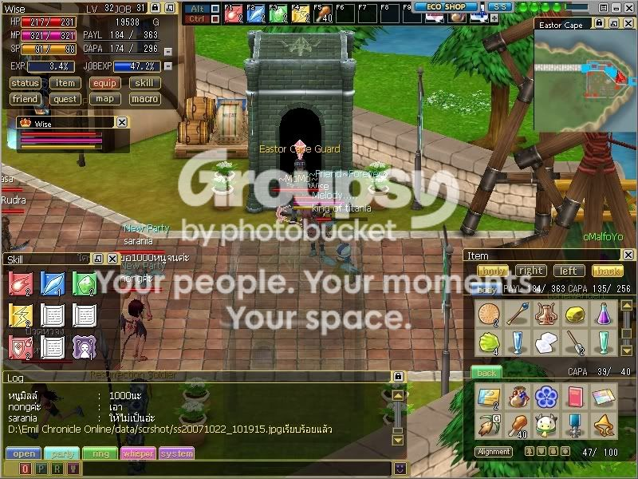
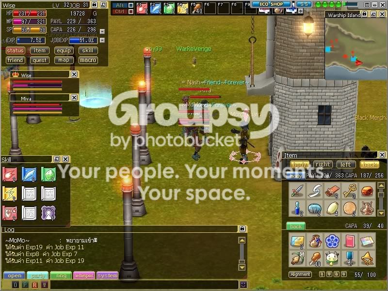
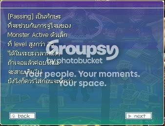

วิธีทำ Tiger Eye
Credits : เป็ดน้อย
เงื่อนไข Lv.30 ขึ้นไป
1.ไปที่ บอร์ดทางทิศตะวันออกของอัพทาว

2.คุยกับ Instructor ที่ West Uptown Bridge
เขาจะบอกให้ไปหา Sage Master
3.เมื่อไปหา Sage Master จะถามว่าต้องการเรียน สกิล ไหม?
ให้ตอบตกลง แล้วจะให้เราไปหา NPC ตามชายแดน (ตัวที่มีวงสีแดงๆในรูป)
4.ไปหา Northan Guard ที่ Norazin Cape

5.ไปหา Iron South Guard ที่ Sourin Cape

6.ไปหา Fareast Guard ที่ Easter Cape

7.ไปหา Morg Guard ที่ Warship Island

8.กลับไปหา Sage Master อีกครั้ง

***หมายเหตุ*** สำหรับผู้ที่ทำการเข้าร่วมเป็นทหารของกองทัพฝ่ายใดฝ่ายหนึ่งมาก่อน จะยังไม่สามารถคุยกับsage master ได้เพราะติดevent
ให้ทำการเคลียeventนั่นให้เสร็จเสียก่อน โดยeventจะมีเนื้อหาเกี่ยวกับสถานะภาพระหว่างกองกำลังทั้ง4ที่ไม่สู้ดีนัก
ในสถานะที่อโครโปซิตี้ เป็นเมืองหลวงซึ่งไม่ขึ้นกับฝ่ายใดและอยู่ตรงกลางของเมืองทั้ง4
เราจะต้องทำหน้าที่ในการสอบถามสถานการปัจจุบันของเมืองทั้ง4เมือง
แล้วนำไปบอกให้กับsage master โดยการไปคุยกับทหารซึ่งประจำอยู่หน้าทางเข้าทางตรวจบัตรของแต่ละเมือง ดังนี้
Northern Kingdom (ฝ่ายเหนือ) > ทหารอยู่ที่แมพ Nozarin Cape
Iron City (ฝ่ายใต้) > ทหารอยู่ที่แมพ Sourin Cape
Morg City (ฝ่ายตะวันตก) > ทหารอยู่ที่แมพ Warship Island
FarEast City (ฝ่ายตะวันออก) > ทหารอยู่ที่แมพ Eastor Cape
หลังจากเล่าสถานการณ์ให้กับsagemaster แล้วก็จะสามารถคุยได้ตามปกติ